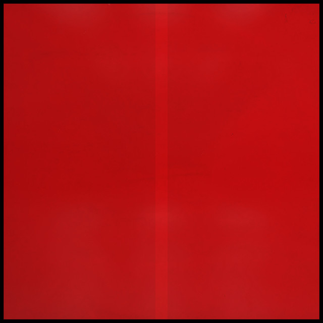

Genesis Owusu - STRUGGLER



Información del álbum facilitada por discogs.com:
Fecha de lanzamiento: 2023
Géneros: Hip Hop
Estilos: Desconocidos
Pais: UK
Votos: Media de 4.0 con 1 votos
Sello: Pipsqueak Records
Bass Guitar, Backing Vocals - Gary Doyle
Electric Guitar, Vocals, Music By, Lyrics By - Michael Baines
Tracklist:
A1. Leaving The Light
A2. The Roach
A3. The Old Man
A4. See Ya There
A5. Freak Boy
A6. Tied Up!
B1 . That’s Life (A Swamp)
B2. Balthazar
B3. Stay Blessed
B4. What Comes Will Come
B5. Stuck To The Fan